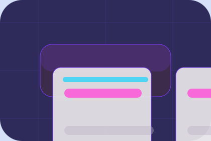

Pressure
Need names the real friction visitors bring to the home route, so the page feels relevant before any claim is made.
Utilities
Playful utility account flow for public service access.

Home / 02
Need frames the pressure behind the visit, then connects it to a practical path visitors can recognise and act on.
The copy avoids blame and panic. It shows the common friction, the practical consequence, and the calmer route Clear uses to move people forward.
Open AuthorityNeed names the real friction visitors bring to the home route, so the page feels relevant before any claim is made.
Home / 03
Reliability shows what changes after the work: clearer decisions, visible progress, and proof points that connect the offer to real outcomes.
The layout connects before-and-after thinking with measured outcomes, making the result easy to scan without promising what the business cannot guarantee.
Open ServicesThe uncertainty, delay, or missed opportunity visitors bring into reliability.
The clearer, safer, or more valuable state Clear is designed to support.
The visible cue that connects reliability to a believable decision, not a loose claim.
Home / 04
Access adds civic context to the home route, using the playful utility account flow structure to support public service access before visitors choose a next step.
Clear uses rounded tariff cards and focused copy to make the decision easier to scan, aligning the section with public service access rather than filling space.
Open NetworkAccess gives the page a specific angle instead of repeating the navigation label.
The rounded tariff cards show what to compare, what to avoid, and what matters most for utilities, water & essential infrastructure visitors.
The final cue points to a useful internal route so the section keeps the journey moving.
Home / 05
Network explains the practical scope, best-fit situations, and expected outcome so utilities visitors can compare options without decoding jargon.
The section keeps the offer concrete: what is included, who it is best for, what decision it supports, and which linked route gives the deeper detail.
Open SafetyWho should use network and when it belongs in the home journey.
The practical benefit visitors should expect after choosing this route.
Where to compare details, pricing, support, or contact options before committing.
Home / 06
Safety adds civic context to the home route, using the playful utility account flow structure to support public service access before visitors choose a next step.
Clear uses rounded tariff cards and focused copy to make the decision easier to scan, aligning the section with public service access rather than filling space.
Open ProjectsSafety gives the page a specific angle instead of repeating the navigation label.
Home / 07
Updates adds civic context to the home route, using the playful utility account flow structure to support public service access before visitors choose a next step.
Clear uses rounded tariff cards and focused copy to make the decision easier to scan, aligning the section with public service access rather than filling space.
Open SupportUpdates gives the page a specific angle instead of repeating the navigation label.
The rounded tariff cards show what to compare, what to avoid, and what matters most for utilities, water & essential infrastructure visitors.
The final cue points to a useful internal route so the section keeps the journey moving.
Home / 08
Trust gives the proof layer for home: standards, evidence, and reassurance that make the next decision feel grounded.
Instead of relying on vague claims, Clear presents visible standards, process cues, and proof artifacts that help utilities visitors judge fit.
Open ReportsVisible proof that helps visitors believe the claims behind trust.
The quality, safety, or operating expectation this section makes explicit.
What becomes clearer before someone decides whether to request service.
Home / 09
Questions handles buying doubts directly so visitors can understand timing, fit, limits, and the safest next step.
Answers are short by design: enough to remove hesitation, not so much that the page turns into documentation before the visitor can act.
Open ContactQuestions gives the page a specific angle instead of repeating the navigation label.
The rounded tariff cards show what to compare, what to avoid, and what matters most for utilities, water & essential infrastructure visitors.
The final cue points to a useful internal route so the section keeps the journey moving.
Clear starts with a focused intake so the recommendation matches the visitor's context, risk, timing, and readiness.
Each route explains inclusions, exclusions, documents, timing, and the decision points that affect final delivery.
The theme uses playful utility account flow, rounded tariff cards, and service request finder, alert banner, report filter rather than a shared template rhythm.
Purple service hero
Select the closest route and Clear keeps the next step, proof, and follow-up expectation aligned with public service access.
Home / 10
Clear closes the home route with a clear action, a quick reminder of the value, and a low-friction way to request service.
Visitors who are ready can use the primary action. Visitors who are still comparing can scan the section links, proof, and support routes before they request service.
Request ServiceThe final block keeps the choice simple: act now, compare one more proof route, or send enough detail for a focused response.
Request Servicepublic service access
A utility service site with bright service cards, friendly calculator modules, alert strips, and help routing. Home ends with a direct path to request service, plus enough context for visitors who still need to compare.

Request Service